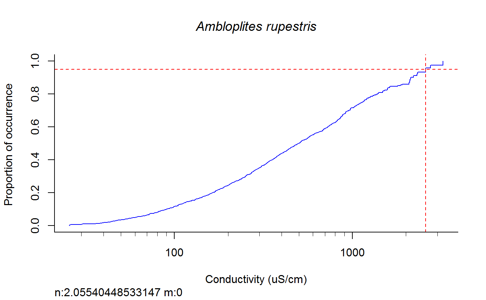
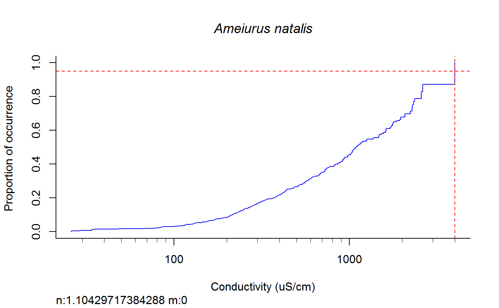
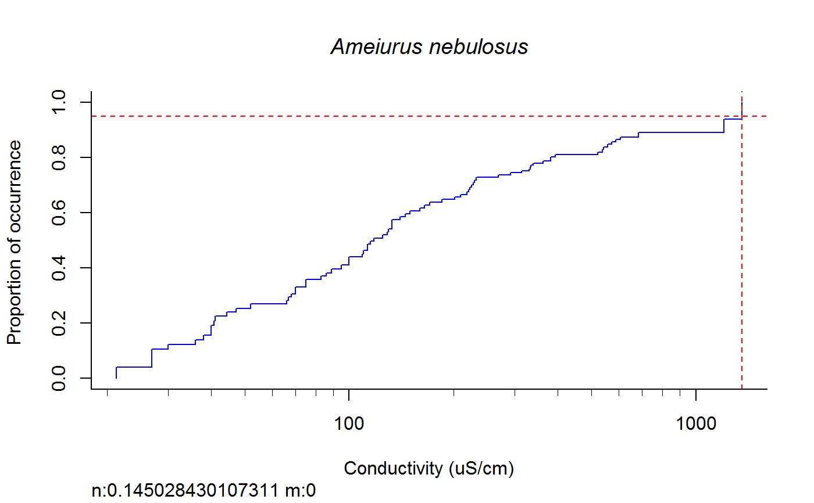
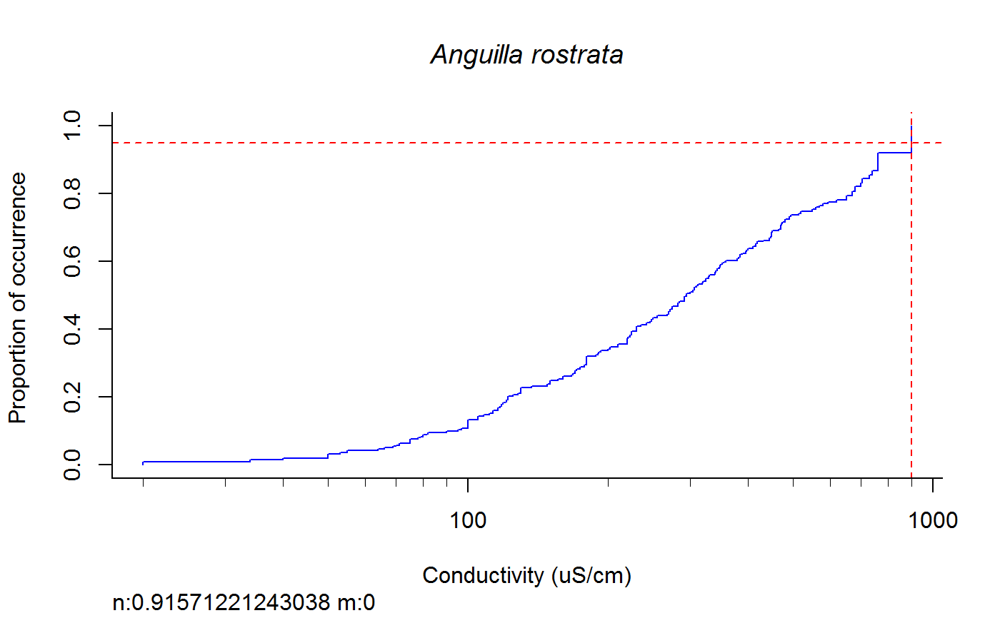
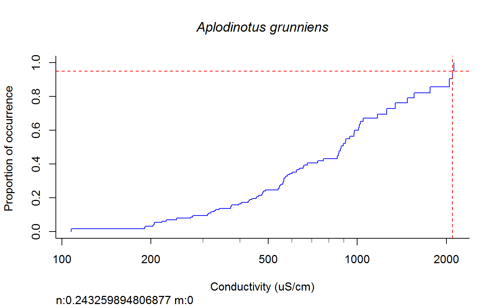

Weighted cdf function to calculate XC95 values on log10 transformed data.
wt.cdf(data.env, data.sp.wide, plot = T, dogam = F, SampleID = "Station_Date", tag = "", sortvect = NULL, np = 61, nt = 25, addtrend = F, wd = getwd(), groups = NULL, xvar = "cond", groupNames = NULL, xvar.PlotName = "Specific Conductivity ( uS/cm)")
| data.env | environmental data, default = "datafile" from global environment. |
|---|---|
| data.sp.wide | Species wide (crosstabed) data; default = "ss" from global environment. |
| plot | A boolean to choose if plot cdf and gam plots; default = F. |
| dogam | A booleen to choose if a gam fit is calculated; default = F. |
| SampleID | Site/sample id column used in both data files; default = "Station_Date" |
| tag | Default = "". |
| sortvect | to provide a vector of species list so plots will be sorted according to the list; default = NULL. |
| np | Number of bins; default = 61. |
| nt | Minimum number of occurence; default = 25. |
| addtrend | A booleen if a trend should be added ( = ">" etc) in the output (T or F); default = F. |
| wd | Working directory for saving files. |
| groups | Three grouping variables (first 2 categorical and third is continuous). Column names in data.env, e.g., HUC (BigHUC), Ecoregion (ECOREGL3), and Watershed Area (WS_Area); default = NULL. |
| xvar | variable on which to base calculations; default = "cond" |
| xvar.PlotName | Plot name for xvar; default = paste0("Conductivity ( ", mu, "S/cm)"). |
| groupNamesOut | Group names in output. Keep short. |
A dataframe of XC95 values and "gam" and "cdf" subfolders of "wd" with TIFF files of plots.
Grouping variable requires three inputs. The first two are categorical and the third is continuous. For example, HUC, Ecoregion, and Watershed Area. "groups" specifies the column names and "groupNamesOut" species the output names. The function will stop if groups is left as null. The function assumes log10 transformed data.
This function replaces fish.wt.cdf. This function is more generic than fish.wt.cdf.
# data data(dta.do) data(ss.sites) # function inputs data.env <- dta.do data.sp.wide <- ss.sites plot <- T dogam <- F SampleID <- "Station_Date" tag <- "wt" sortvect <- NULL np <- 61 nt <- 25 addtrend <- F wd <- getwd() groups <- c("BigHUC","ECOREGL3","WS_AREA") xvar <- "cond" groupNames <- c("HUC04", "EcoL3", "Area") xvar.PlotName <- "Conductivity (uS/cm)" # run function (~20 seconds) df.xc95 <- wt.cdf (data.env, data.sp.wide, plot = T, dogam = T , SampleID = SampleID, tag = tag, sortvect = NULL , np = 61, nt = 25, addtrend = T, wd = getwd() , groups = groups, xvar = xvar, groupNames = groupNames , xvar.PlotName = xvar.PlotName)View(df.xc95)